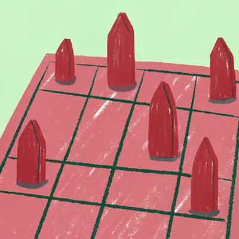

2人で交互に駒を動かして、相手の王を詰ませたら勝ち。小さい盤の「5五将棋」なら、1局が5〜10分で終わる。
リンクから開いたので、ルームコードは入っているよ。名前を入れて「参加する」を押してね。
画面共有でみんなに見せるための画面です。ルームには入らず、見るだけです。
1台の画面をみんなで見てあそぶ。駒を動かすのは、画面を動かす人。相手を CPU にすると、CPU と対戦できる。
参加のしかた
「ルームに参加する」で、名前とルームコードを入れてね
対戦しない人は、自分の画面で対局を見られるよ。
その人の番には、ホストが代わりに指す。
ホストがはじめるのを待っているよ
ホストが次を決めるのを待っているよ
遊んでくれてありがとう。